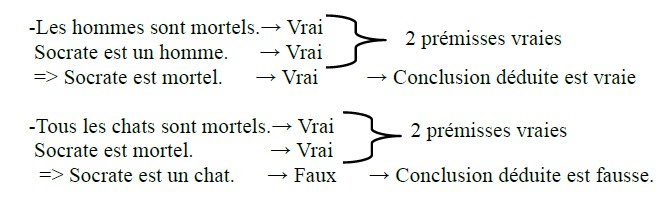
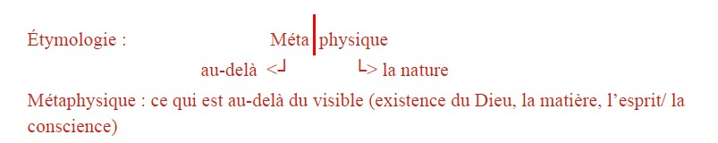
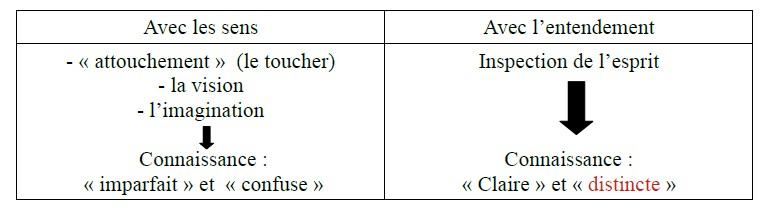
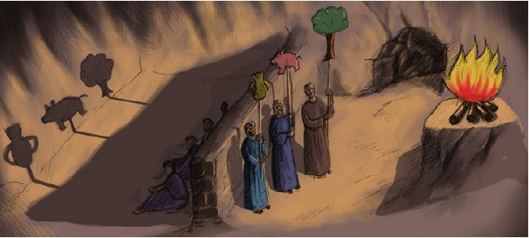
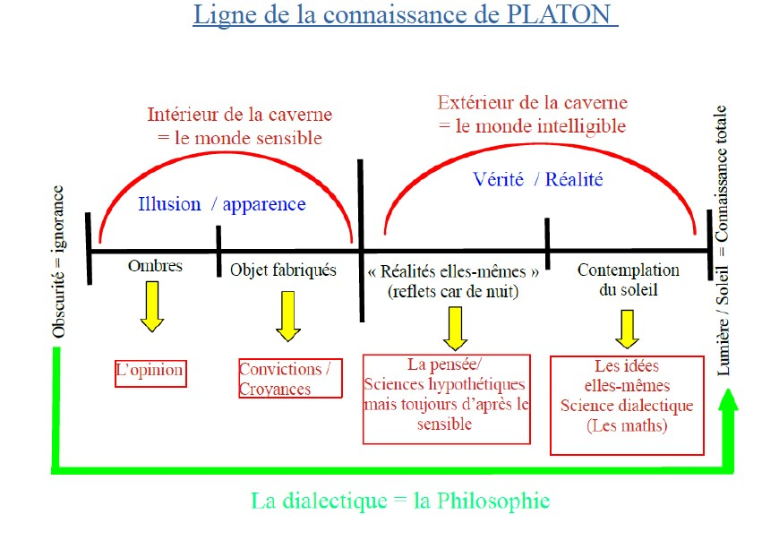
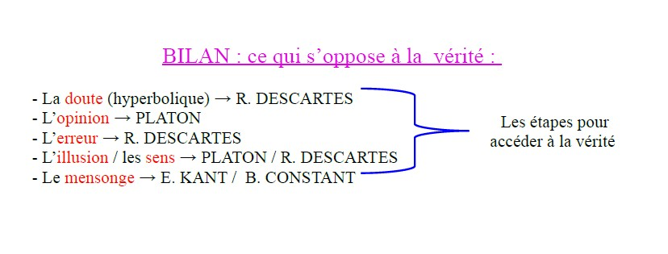
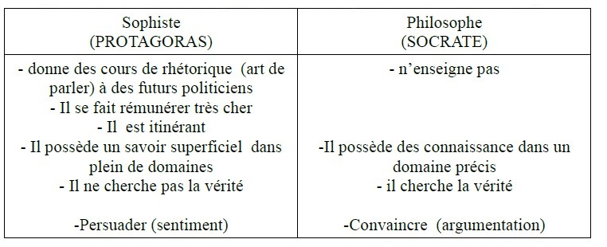

La vérité serait donc le fait de ne pas oublier les Idées que nos âmes ont contemplées avant de s'incarner.
🔬 2 Positions scientifiques :
Les lois (divines) sont présentées dans le monde et il s'agit pour le scientifique de les découvrir et de les dévoiler.
Le scientifique invente les lois, les théories dans le but de tenter d'expliquer et de prévoir les phénomènes.
📚 Emmanuel KANT, Critique de la raison pure, II, XVIIIe siècle
p. 524
📖 Extrait — « Théorie transcendantale de la méthode »
Pour qu’une pensée soit vraie, c’est-à-dire conforme à l’objet dont elle ou nie ceci ou cela (c’est une pomme, ce n’est pas une poire), il faut d’abord qu’elle soit en accord avec elle-même. La logique définit en effet les règles qui s’imposent à toute pensée vraie. Une pensée qui se contredit ne peut à l’évidence prétendre à quelque vérité que ce soit. Mais cette forme logique de la pensée suffit-elle à garantir son accord avec un contenu donné ?
L'ancienne et célèbre question par laquelle on prétendait pousser à bout les logiciens
[...] est celle-ci : Qu'est-ce que la vérité? [...] Mais pour ce qui regarde la connaissance,
quant à sa forme simplement (abstraction faite de tout contenu), il est […] clair
qu'une logique, en tant qu'elle traite des règles générales et nécessaires de l'entendement, doit exposer, dans ces règles mêmes, les critères de la vérité. Car ce qui les
5
contredit est faux, puisque l'entendement s'y met en contradiction avec les règles
générales de sa pensée et, par suite, avec lui-même. Mais ces critères ne concernent
que la forme de la vérité, c'est-à-dire de la pensée en général et, s'ils sont, à ce titre,
très justes, ils sont pourtant insuffisants. Car une connaissance peut fort bien être
10
complètement conforme à la forme logique, c'est-à-dire ne pas se contredire elle-
même, et cependant être en contradiction avec l'objet. Donc le critère simplement
logique de la vérité, c'est-à-dire l'accord d'une connaissance avec les lois générales
et formelles de l'entendement et de la raison est, il est vrai, la condition sine qua
non et, par suite, la condition négative de toute vérité; mais la logique ne peut pas
15
aller plus loin ; aucune pierre de touche ne lui permet de découvrir l'erreur qui
atteint non la forme, mais le contenu. La logique générale résout donc en ses éléments tout le travail formel de l'entendement et de la raison et présente ces éléments
comme principes de toute appréciation logique de notre connaissance. Cette partie
de la logique [...] est par là même la pierre de touche au moins négative de la vérité,
20
puisqu'il faut tout d'abord examiner et apprécier toute connaissance, quant à sa
forme, d'après ces règles, avant de l'éprouver quant à son contenu, pour établir si,
par rapport à l'objet, elle renferme une vérité positive. Mais, comme la simple forme
de la connaissance, aussi d'accord qu'elle puisse être avec les lois logiques, est bien
loin par là de suffire à établir la vérité matérielle (objective) de la connaissance,
25
personne ne peut se risquer à l'aide de la logique seule, à juger des objets et à en
affirmer la moindre des choses, sans en avoir entrepris auparavant une étude approfondie, en dehors de la logique.
Comment établir une connaissance vraie sur le monde ?
Pour établir la vérité d’une connaissance, les règles générales de la logique sont nécessaires : le principe de non contradiction, le principe de causalité.
De la ligne 1 à 7 : → Notre entendement suit les règles de la logique, déjà la forme de ses raisonnements. L’entendement (de Kant) : C’est la faculté de créer des concepts, de faire la synthèse des différentes données de l’intuition sensible en les ordonnant à l’aide des catégories (causalité, espace, temps).
De la ligne 7 à 11 : → Les règles de la logique sont nécessaires mais pas suffisantes, car la vérité formelle se distingue de la vérité matérielle, c’est-à-dire une vérité concernant le contenu.
Aristote est l’inventeur du syllogisme, constitué de 2 prémisses validées comme vraies et d’une conclusion déduite qui sera donc vraie :

De la ligne 11 à 16 : → Vérité négative : nulle pensée ne peut être vraie, si elle ne respecte pas la logique.
De la ligne 16 à 22 : → L’entendement suit les mêmes catégories (causalité, non-contradiction) que la logique. → Notre connaissance du réel s’appuie sur cette logique. Mais cette fidélité rigoureuse à la logique n’est pas suffisante pour dire quelque chose du réel qui soit vraie.
De la ligne 22 à 27 : → Nécessité d’étudier l’objet / la vérité pour lui-même, pour en posséder une connaissance vraie.
📚 4 domaines de vérité :
La vérité liée au langage : le discours tenu sur quelque chose doit être en adéquation avec ce quelque chose. Exemple : La tour Eiffel est à Paris. => Elle repose sur les faits.
La vérité mathématique : elle repose sur des démonstrations logiques.
La vérité des sciences expérimentales : elle repose sur un protocole (hypothèse/expérimentation/validation) et sur l’expérimentation.
La vérité judiciaire : elle repose sur des preuves afin de déterminer l’innocence ou la culpabilité.
⚙️ 3 Critères pour définir la qualité d’une théorie scientifique :
Elle doit être la plus simple possible.
Elle doit pouvoir expliquer le plus de phénomènes possibles.
Elle doit prévoir les phénomènes.
📚 Thomas d'AQUIN, Somme théologique, XIIIe siècle
p. 522
📖 Extrait
La vérité qualifie-t-elle un état de choses ou le jugement que nous portons sur cet état de choses ? N’est-elle pas une qualité de la pensée plutôt que des choses ? Ne désigne-t-elle pas la pensée qui dit qu’une chose blanche est blanche, et l’erreur la pensée qui dit qu’une chose est blanche lorsqu’elle ne l’est pas ? Dans ce texte, Thomas d’AQUIN soutient que la vérité n’est pas une chose mais une relation, celle de l’adéquation de l’idée et de la chose.
On l'a déjà dit, le vrai, selon sa raison formelle première, est dans l'intelligence.
Puisque toute chose est vraie selon qu'elle possède la forme qui est propre à sa
nature, il est nécessaire que l'intellect en acte de connaître soit vrai en tant qu'il y
a en lui la similitude de la chose connue, similitude qui est sa forme propre en tant
5
qu'il est connaissant. Et c'est pour cela que l'on définit la vérité par la conformité
de l'intellect et de la chose. Il en résulte que connaître une telle conformité, c'est
connaître la vérité.
Ligne 1 : → La vérité est contenue dans notre intelligence parce que nous possédons une faculté logique (que Dieu nous a donnée).
De la ligne 2 à 5 : → L’objet étudié est connaissable dans la mesure où il est en lien avec celui qui cherche à la connaître. Ce lien est fondé sur la création de cet objet et de celui qui cherche à connaître par Dieu.
Ligne 3 : « L’intellect en acte » ⇒ référence à ARISTOTE (actif / agissant ≠ en puissance = virtuel, en devenir).
De la ligne 5 à 7 : → Conformité de ce qui est saisi par l’intellect avec l’objet étudié.
📚 René DESCARTES, Règles pour la direction de l'esprit, XVIIe siècle
p. 408
📖 Extrait
Le privilège des mathématiques comme modèle de vérité n’a rien d’arbitraire, selon Descartes. Il vient du fait que leur objet est simple et abstrait, conçu hors de toute expérience.
De là se conclut avec évidence la raison pour laquelle l’arithmétique et la géométrie sont
bien plus certaines que toutes les autres disciplines : c’est qu’elles seules traitent d’un
objet si pur et si simple qu’elles n’admettent absolument rien que l’expérience ait rendu
incertain, et qu’elles consistent tout entières à tirer des conséquences par voie de déduction
5
rationnelle. Elles sont ainsi les plus faciles et les plus claires de toutes, et elles ont un objet
tel que celui que nous exigeons, puisqu’en elles, sauf inadvertance, il semble que l’homme
puisse difficilement se tromper. Il ne faut pas s’étonner pourtant si beaucoup d’esprits se
portent spontanément plutôt vers d’autres disciplines ou vers la philosophie : cela vient,
en effet, de ce que chacun se donne plus hardiment licence de jouer les devins1 dans un
10
domaine obscure que dans un domaine évident, et qu’il est bien plus facile d’entrevoir
quelque chose à propos d’une question quelconque, que de parvenir sur une seule, si facile
soit-elle, à la vérité elle-même.
De tout cela il faut maintenant conclure, non point certes qu’on ne doivent étudier que
l’arithmétique et la géométrie, mais seulement que ceux qui cherchent le droit chemin de
15
la vérité ne doivent s’occuper d’aucun objet à propos duquel ils ne puissent obtenir une
certitude égale aux démonstrations de l’arithmétique et de la géométrie.
Idée générale : Apologie des mathématiques comme moyen sûr d’atteindre la vérité. Descartes voulait mettre le monde sous forme mathématique : Mathesis Universalis.
📚 Karl POPPER, Conjectures et réfutations, XXe siècle
p. 402
📖 Extrait
Une théorie serait-elle scientifique parce qu’elle est infaillible et irréfutable ? C’est exactement l’inverse selon Karl Popper, qui entend opposer à la science ce qui relève de la métaphysique, de la religion ou de l’idéologie.
Une théorie qui n’est réfutable par aucun événement qui se puisse concevoir est dépourvue
de caractère scientifique. Pour les théories, l’irréfutable n’est pas (comme on l’imagine
souvent) vertu mais défaut.
Toute mise à l’épreuve véritable d’une théorie par des tests constitue une tentative pour
5
en démontrer la fausseté ou pour la réfuter. Pouvoir être testée c’est pouvoir être réfutée ;
mais cette propriété comporte des degrés : certaines théories se prêtent plus aux tests, s’y
exposent davantage à la réfutation que les autres, elles prennent, en quelque sorte, de plus
grands risques.
→ Une théorie est scientifique si et seulement si elle est réfutable. La falsifiabilité / réfutabilité. 2 Théories qui ne sont pas scientifiques pour Karl POPPER :
A. Théorie de l’existence de l’inconscient (S. FREUD)
B. Théorie de la lutte des classes (Karl MARX)
📚 Albert EINSTEIN et Léopold INFELD, L'évolution des idées en physique, XXe siècle
p. 422
📖 Extrait
On pourrait croire que, parmi les sciences, la physique soit celle qui soit la plus proche d’une description fidèle de la réalité naturelle. Pourtant la vérité n’est pour elle qu’un horizon, considèrent Albert Einstein et Léopold Infeld.
C’est en réalité tout notre système de conjectures1 qui
doit être prouvé ou réfuté par l’expérience. Aucune de
ces suppositions ne peut être isolée pour être examinée
séparément. […] Les concepts physiques sont des créations libres de l’esprit humain et ne sont pas, comme
5
on pourrait le croire, uniquement déterminés par le monde extérieur. […] Il pourra aussi croire à l’existence d’une
limite idéale de la connaissance que l’esprit humain peut atteindre. Il pourra appeler cette
limite idéale la vérité objective.
Étymologie : physis (en grec: φύσις) → Physique → la nature
De la ligne 1 à 8 : → La science est « système de conjectures » (hypothèses).
De la ligne 9 à 12 : → La science est une création humaine, de l’intellect. Métaphore de la montre fermée.
De la ligne 12 à 17 : → « voit » / « entend » → à l’aide de nos sens, nous percevons les phénomènes. « Boîtier fermé » renvoie à notre impossibilité de comprendre comment ces phénomènes ont lieu.
De la ligne 18 à 22 : → La vérité se pose comme un horizon à atteindre, une limite idéale. Repère : Savoir ≠ Croire
vérité objective : c’est un pléonasme, car la vérité, par définition, est objective, voire universelle.
📚 René DESCARTES, Méditations métaphysiques, 1641
p. 336
📖 Extrait
Dans un contexte historique où le système géocentrique est remis en cause par Copernic puis par Galilée, il est urgent, pour Descartes, de se demander s'il peut trouver une première certitude qui lui servira de fondement. Après avoir entrepris de douter de tout, dans cette deuxième méditation, il émet l'hypothèse d'un malin génie qui le tromperait constamment.
Je suppose donc que toutes les choses que je vois sont fausses ; je me persuade que
rien n'a jamais été de tout ce que ma mémoire remplie de mensonges me représente ;
je pense n'avoir aucun sens ; je crois que le corps, la figure, l'étendue, le mouvement et
le lieu ne sont que des fictions de mon esprit. Qu'est-ce donc qui pourra être estimé
5
véritable ? Peut-être rien autre chose, sinon qu'il n'y a rien au monde de certain.
[…]
Mais il y a un je ne sais quel trompeur très puissant et très rusé, qui emploie toute son industrie à
me tromper toujours. Il n'y a donc point de doute que je suis, s'il me trompe ;
et qu'il me trompe tant qu'il voudra il ne saurait jamais faire que je ne sois rien,
20
tant que je penserai être quelque chose. De sorte qu'après y avoir bien pensé, et
avoir soigneusement examiné toutes choses, enfin il faut conclure, et tenir pour
constant que cette proposition : Je suis, j'existe, est nécessairement vraie, toutes
les fois que je la prononce, ou que je la conçois en mon esprit.
Cogito ergo sum : Je pense donc je suis (j’existe)
⇒ La vérité première à laquelle il aboutit. Le doute cartésien est radical, hyperbolique, méthodique (par étapes). Ce doute est fécond car il aboutit à cette vérité, au contraire du doute des Sceptiques (Pyrrhon d’Élis).

📚 René DESCARTES, Méditations métaphysiques, 1641
p. 337
📖 Extrait — Le morceau de cire
Après s'être défini comme « une chose qui pense », Descartes se demande ce qu'il peut connaître du monde. Malgré les changements d'état d'un morceau de cire chauffé, et donc son changement d'apparence sensorielle, nous ne doutons pas qu'il s'agisse bel et bien du même morceau de cire. C'est notre jugement qui s'impose à la perception du morceau de cire : nous ne recevons pas passivement des informations des sens, nous jugeons la réalité perçue.
Prenons pour exemple ce morceau de cire : il vient tout fraîchement d'être tiré de la ruche […]
Mais voici que pendant que je parle, on l'approche du feu : ce qui y restait de saveur s'exhale, l'odeur s'évapore, sa
couleur se change, sa figure se perd, sa grandeur augmente, il devient liquide […]
La même cire demeure-t-elle encore après ce changement ? Il faut avouer qu'elle
15
demeure ; personne n'en doute, personne ne juge autrement. […] Or ce qui est ici grandement à remarquer, c'est que sa perception n'est point
une vision, ni un attouchement, ni une imagination, et ne l'a jamais été quoiqu'il
le semblât ainsi auparavant, mais seulement une inspection de l'esprit […]
« Le morceau de cire » :
De la ligne 1 à 13 : Les changements de la substance « cire » perçus par les sens.
De la ligne 14 à 19 : Qu’est-ce qui demeure de la substance sous ces différents changements ?
De la ligne 20 à 23 : C’est l’entendement qui permet d’obtenir une connaissance stable et certaine de cette substance changeante. Entendement (Descartes) : La faculté de comprendre, d’apercevoir, de saisir l’intelligible.

📚 PLATON, La République, Livre VII, IVe siècle av. J.-C.
p. 542
📖 Extrait — Allégorie de la caverne
Au livre VII de la République, SOCRATE discute avec Glaucon et lui demande d’imaginer l’intérieur d’une caverne, où des prisonniers seraient enfermés. Il s’agit d’une allégorie : les différents éléments qui constituent la description de la caverne représentent des idées ou des concepts.
Maintenant représente toi de la façon que voici l’état de notre nature
relativement à l’instruction et à l’ignorance. Figure-toi des hommes dans une
demeure souterraine, en forme de caverne, ayant sur toute sa largeur une entrée
ouverte à la lumière; ces hommes sont là depuis leur enfance, les jambes et le
5
cou enchaînés, de sorte qu’ils ne peuvent ni bouger ni voir ailleurs que devant eux,
la chaîne les empêchant de tourner la tête; la lumière leur vient d’un feu allumé
sur une hauteur, au loin derrière eux; entre le feu et les prisonniers passe une
route élevée : imagine que le long de cette route est construit un petit mur, pareil
aux cloisons que les montreurs de marionnettes dressent devant eux et au dessus desquelles
10
ils font voir leurs merveilles.

Platon utilise une image et une histoire pour exprimer l’état dans lequel se situe l’Homme. 1. Les prisonniers représentent notre condition dans un état d’illusion. 2. La sortie d’un prisonnier de la caverne : le chemin vers la vérité est difficile et douloureux. 3. Le retour du prisonnier / le philosophe : rôle du philosophe dans la société.

📚 Emmanuel KANT, D'un prétendu droit de mentir par l'humanité, 1797
p. 524
📖 Extrait
Une célèbre polémique a opposé Constant à Kant vers 1797 concernant la question du droit de mentir. Aucun des deux ne défend le principe d’un mensonge par égoïsme et tous les deux s’accordent à considérer que dire la vérité est un devoir. Mais Constant estime indispensable de regarder les circonstances du mensonge et les conséquences qu’il entraînerait avant de condamner le menteur. Intransigeant, Kant fait de la véracité un devoir absolu.
Être véridique dans les propos qu’on ne peut éluder, c’est là le devoir formel de l’homme
envers chaque homme, quelle que soit la gravité du préjudice qui peut en résulter pour
soi-même ou pour autrui. […] La véracité est un devoir, on doit le considérer comme le fondement de tous
les devoirs qui doivent se fonder sur un contrat […] Il y a donc un commandement sacré de la raison, qui commande inconditionnellement
et qu’aucune convenance ne doit restreindre : être véridique (honnête) dans toutes ses déclarations.
Ne pas mentir est un devoir, car si l’un d’entre nous ment, il engage l’humanité entière. Cette loi morale ne souffre aucune exception. Une action est morale si et seulement si elle est universalisable.
📚 Benjamin CONSTANT, Des réactions politiques, 1797
p. 524
📖 Extrait
Il est hors de doute que les principes abstraits de la morale, s’ils étaient séparés de leurs principes intermédiaires, produiraient autant de désordre dans les relations sociales des hommes que les principes abstraits de la politique […] Le principe moral que dire la vérité est un devoir, s’il était pris de manière absolue et isolée, rendrait toute société impossible. […] Dire la vérité n’est donc un devoir qu’envers ceux qui ont droit à la vérité. Or nul homme n’a droit à la vérité qui nuit à autrui.
Distinction entre la théorie et la pratique. La loi morale (kantienne) générale vs les cas particuliers.
Ligne 7 : « Philosophe allemand » → référence à Emmanuel KANT.
La solution de Benjamin CONSTANT : la loi morale de ne pas mentir exige aussi que la vérité ne nuise pas à autrui.

📚 Thomas KUHN, La structure des révolutions scientifiques, 1962
p. 402
📖 Extrait
Les crises sont une condition préalable et nécessaire de l’apparition de nouvelles théories. […] Le passage d’un paradigme en état de crise à un nouveau paradigme d’où puisse naître une nouvelle tradition de science normale est loin d’être un processus cumulatif […] C’est plutôt une reconstruction de tout un secteur sur de nouveaux fondements. Le passage au nouveau paradigme est une révolution scientifique.
Paradigme = modèle
Lorsqu’une théorie se révèle défaillante, trois solutions :
a) Les scientifiques résolvent le problème à l’intérieur du paradigme existant.
b) Pas de solution → on laisse le problème pour la génération future.
c) Changement de paradigme (KEPLER → NEWTON → EINSTEIN) : une révolution scientifique.
📚 PLATON, Théétète, IVe siècle av. J.-C.
p. 542
📖 Extrait — Protagoras
Platon fait parler Protagoras, un sophiste qui soutient, dans un livre perdu qui s’appelait probablement La Vérité, que « l’homme est la mesure de toutes choses ». Platon interprète cette thèse dans le sens où chaque individu serait le seul juge de ce qui est vrai pour lui. L’idée de vérité conserve-t-elle un sens si elle n’a aucun critère ni objectif ni même intersubjectif ? Faut-il sacrifier l’idéal d’une vérité universelle et éternelle au profit d’une multiplicité d’appréciations individuelles et changeantes ?
PROTAGORAS : Car j’affirme, moi, que la vérité est telle que je l’ai définie, que chacun
de nous est la mesure de ce qui est et de ce qui n’est pas, mais qu’un homme diffère
infiniment d’un autre précisément en ce que les choses sont et paraissent autres à
celui-ci, et autres à celui-là.
Distinction entre l’opinion et la vérité :
Opinion (doxa) : subjective, ce que tout le monde pense sans y avoir réfléchi.
Vérité (aléthéia) : objective, universelle. Distinction entre être et paraître :
L’être : les choses qui sont → le réel (la vérité)
Paraître : de l’ordre de la perception, subjectif.

📄 Veuillez trouver la version PDF de ce cours ci-dessous :